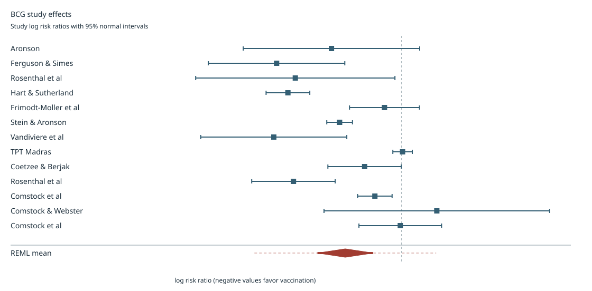

Getting started
This short run takes the published BCG example from study counts to a pooled estimate, predictions, and forest-plot files. The example is a reproducible software demonstration; its results describe these 13 studies and do not by themselves explain differences between studies.
Install
Use Python 3.10 or newer. From a local checkout, install the package and its core dependencies in editable mode:
python -m pip install -e .
To work from a repository clone instead, first get the source and enter its directory:
git clone https://github.com/itchyshin/metafor-py.git
cd metafor-py
python -m pip install -e .
The examples use the pinned BCG counts in reference/v1/bcg.csv. They do not
need an R installation to run.
Run the BCG example
python examples/bcg.py
The script calculates log risk ratios and sampling variances, then fits
fixed-effect, REML random-effects, and latitude meta-regression models. Its
machine-readable results and forest data are written under examples/.
For example, the current checked output includes these pooled estimates on the log risk-ratio scale:
Model |
Estimate |
95% confidence interval |
Between-study variance |
|---|---|---|---|
Fixed effect |
-0.4303 |
-0.5097 to -0.3509 |
0 |
Random effects (REML) |
-0.7145 |
-1.0669 to -0.3622 |
0.3132 |
Negative log risk ratios correspond to risk ratios below one. The random-effects interval is wider here because it includes estimated variation among study effects. These values are specific to this fixture and implementation; see the comparison page for the checked cross-language quantities and tolerances.
Inspect predictions and the forest plot
The full run also predicts the mean log risk ratio at 0°, 30°, and 60° absolute latitude. For instance, at 30° the fitted mean is about -0.622, with a 95% confidence interval from -0.831 to -0.412. The corresponding 95% prediction interval for a new study is wider, about -1.202 to -0.041, because it includes between-study variation as well as uncertainty in the mean.
The script writes examples/bcg-forest-data.json and
examples/bcg-forest.svg. The JSON keeps each study label, estimate, interval,
and row position together; the SVG is a self-contained forest plot on the log
risk-ratio scale. The documentation build displays the SVG below.

To run one part of the script, use a selector:
python examples/bcg.py --case=models
python examples/bcg.py --case=prediction
python examples/bcg.py --case=forest
See the BCG article for the study question and interpretation, or continue to the tutorial index for all 21 topics.
License and project roles
The source and documentation are distributed under GPL-2.0-or-later. The project-intended team for this Python port is Shinichi Nakagawa, Yefeng Yang, and Wolfgang Viechtbauer. Wolfgang Viechtbauer is the author of the upstream R package; the upstream authorship and the intended team for this port are separate facts.